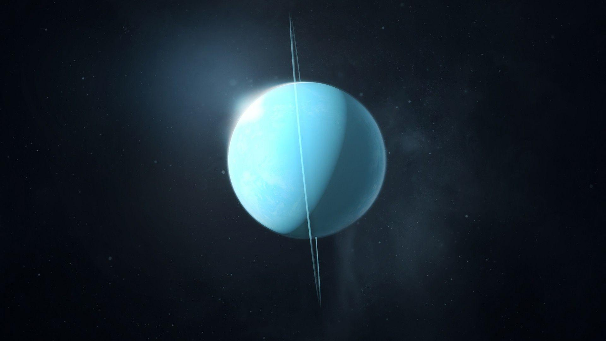
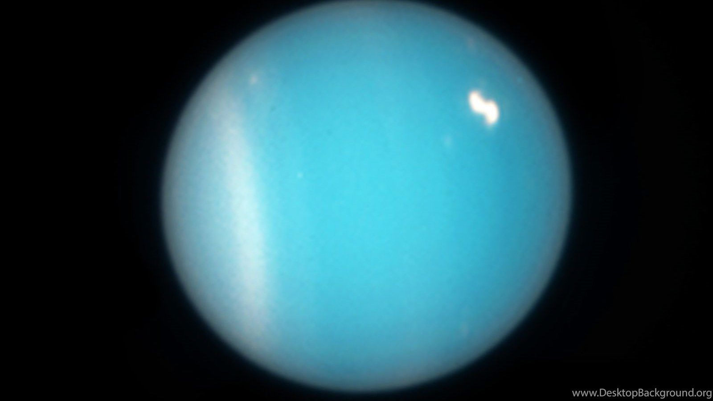
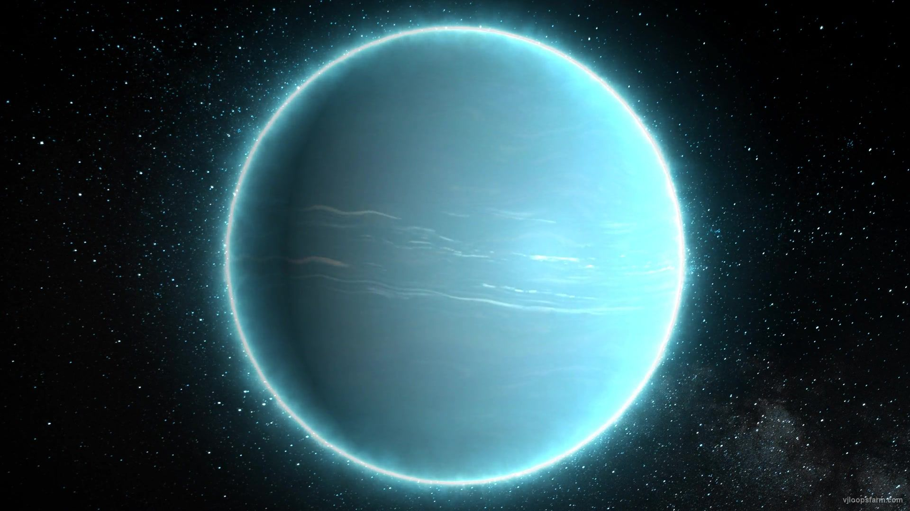
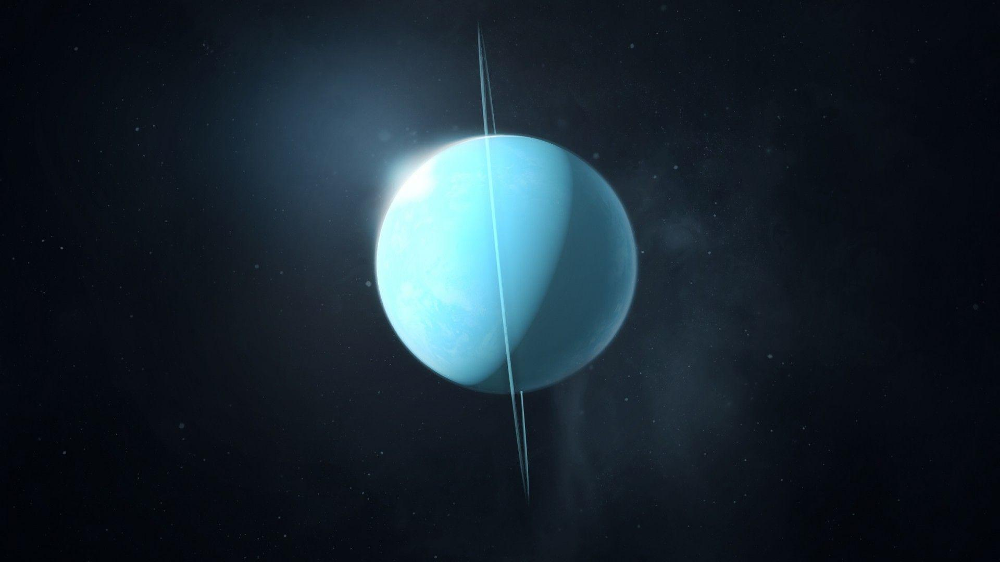
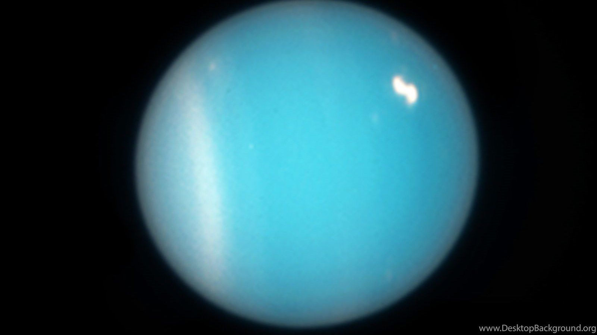
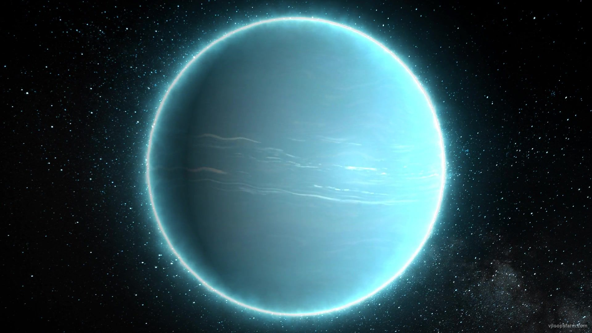

| Equatorial circumference | 99,808 miles |
|---|---|
| Surface Area | 3,130,000,000 square miles |
| Density | 1.27 g/cm3 | Volume | 68,330,000,000,000 km3 |
| Radius | 15,882 miles |
| Mass | 8.681E25 kg |
About Uranus
Uranus is the seventh planet from the Sun in our solar system, characterized as an ice giant. It has a unique bluish-green appearance due to the presence of methane in its atmosphere. Uranus rotates on its side, with an extreme axial tilt, resulting in unique seasonal patterns. The planet has a dynamic atmosphere with bands of clouds and a distinct ring system. Uranus lacks a solid surface and is composed mainly of hydrogen, helium, water, ammonia, and methane. Its internal structure includes a presumed rocky core surrounded by icy and gaseous layers.
Composition
Uranus, an ice giant, is primarily composed of hydrogen and helium, making up the majority of its mass. Water ice is a significant component, contributing to its classification as an ice giant. Ammonia and methane are present in the atmosphere, giving Uranus its bluish-green color. The outer layer consists of methane ice clouds. The planet likely has a rocky core surrounded by layers of icy and gaseous materials. Due to its remote location and lack of a solid surface, our understanding of Uranus's composition is based on theoretical models and indirect observations..
Structure
A. Atmosphere
Uranus has a thick atmosphere composed mainly of hydrogen, helium, methane, and trace amounts of other compounds. The upper atmosphere exhibits bands of clouds, with methane giving the planet its bluish-green color.
B. Cloud Layers
The outer atmosphere of Uranus contains cloud layers primarily composed of methane ice crystals. These clouds are arranged in bands and may contribute to the planet's distinct appearance.
C. Interior Layers
Icy Mantle
Below the atmosphere, there is an icy mantle that includes water, ammonia, and methane ices. This layer contributes to the planet's overall composition and may extend to a considerable depth.
Rocky Core
It is believed that Uranus has a rocky core at its center, consisting of heavier elements. The exact size and composition of the core are still uncertain.
D. Magnetic Field
Uranus has a unique magnetic field that is tilted at a significant angle relative to its rotation axis. The magnetic field is likely generated by processes in the planet's interior, possibly involving a layer of electrically conducting fluid, such as a form of water mixed with ammonia.
Media
Gallery
 





.jpg)